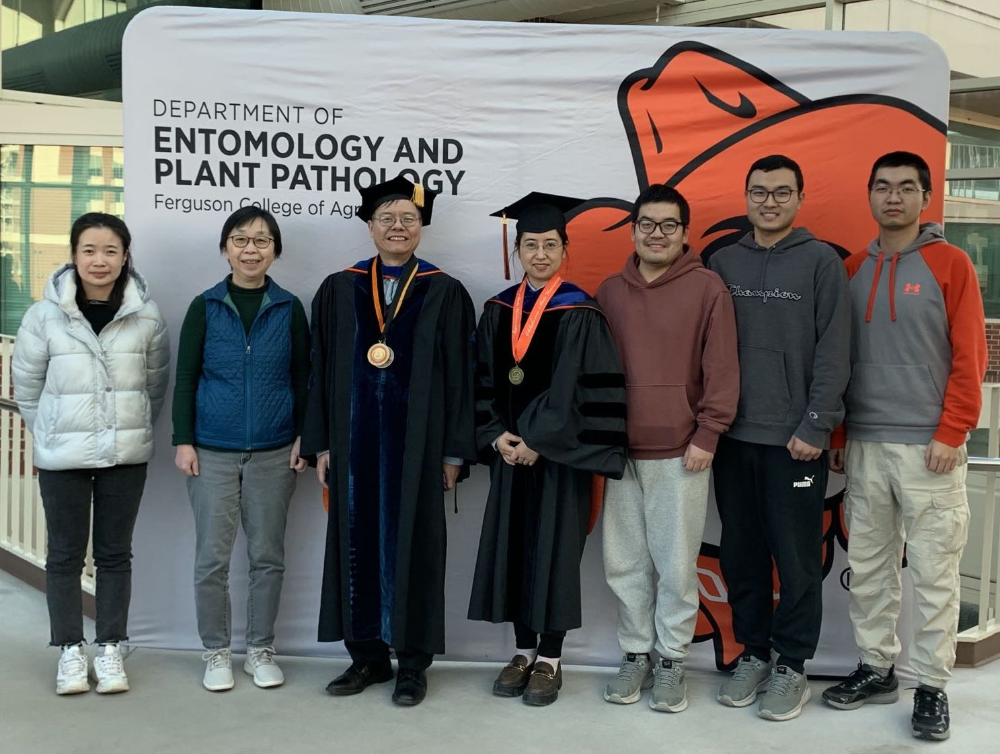

About Lab:

Lab for Intelligent Storage and Computing (Lab4ISC) at Oklahoma State University mainly focuses on two main research directions. One lies in computer systems, including memory/storage systems, system for emerging applications (e.g., Blockchain and machine learning), and storage system security. The other focuses on low-cost hardware design in edge computing and IoT. Specifically, the current research interests include:
• Intelligent and Emerging Storage Systems (e.g., DNA storage, ML for systems, etc.)
• Systems for Big Data Applications (e.g., Blockchain, Machine Learning, etc.)
• Energy-efficient and Low-power Computing Architecture
We are looking for self-motivated students who are interested in pursuing Ph.D. degrees on the topic of developing storage and computer systems or designing energy efficient computing architecture for intelligent systems.
Haobo Jiang, Ph.D,
Professor and Director of Lab
12/24/2022